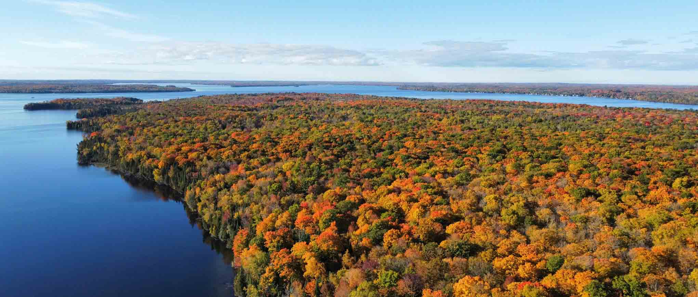

List of Functions and Classes (API)¶
{kind=link}

Photo by Jay Shah on Unsplash¶
Note
All functions and classes should be accessed from the easyclimate
top-level namespace.
Modules inside of the easyclimate package are meant mostly for internal
organization. Please avoid importing directly from submodules since
functions/classes may be moved around.
Core❤️¶
Hierarchical data structure that dynamically manages attributes and nested nodes |
|
Functions for handling calculations of units |
|
The calculation of transient eddy |
|
Obtain data within a specified time period |
|
Normalized Data |
|
Functions for read data. |
|
Tutorials in the easyclimate documentation |
|
Functions for package utility. |
|
This module calculate climate variability |
Dynamical Diagnostics¶
Geographic Finite Difference |
|
Advection |
|
Divergence and Vorticity |
|
Vertical integration using beta factors. |
|
Water Flux |
|
Geostrophic Wind |
Statistics¶
Basic statistical analysis of weather and climate variables |
|
Unified spatial detrending function with multiple computation methods. |
|
This module calculates statistical values over timesteps of the same year |
|
This module calculates statistical values over timesteps of the same month |
|
This module calculates statistical values over timesteps of the same season |
|
Mann-Kendall Test |
|
The analysis of the EOF and MCA |
Spectral Analysis¶
Easy climate top interface for the Pyspharm |
|
Easy climate top interface for the windspharm |
Physics🗺️¶
Others¶
Unit conversion for Meteorological variables |
Filter🎹¶
Butterworth bandpass filter |
|
Lanczos filter |
|
Extract equatorial waves by filtering in the Wheeler-Kiladis wavenumber-frequency domain |
|
Barnes filter |
|
Gaussian filter |
|
Spatial smoothing |
|
Wavelet transform |
|
Red-noise spectra estimating |
|
2D spatial parabolic cylinder function |
|
Empirical Mode Decomposition and Ensemble Empirical Mode Decomposition (EEMD) |
|
Spatio-temporal Spectrum Analysis |
|
Custom mask methods |
Interpolation🔗¶
Fast Barnes interpolation |
|
Regridding |
|
Interpolating mesh/grid data to point locations |
|
Interpolating variables from the model levels (e.g., sigma vertical coordinate) to the standard pressure levels by 1-D function. |
|
Interpolating variables from the pressure levels (e.g., sigma vertical coordinate) to the altitude levels by 1-D function. |
|
Interpolates Community Atmosphere Model (CAM) or Community Earth System Model (CESM) hybrid coordinates to pressure coordinates |
Plot🖊️¶
Quick processing of special axes |
|
Graph processing related functions |
|
Mapping areas of significance |
|
Functions for Taylor Diagrams plotting. |
|
The quick drawing function |
|
Functions for curved quiver plots. |
|
Bar plot for xarray dataset |
|
Bar plot for xarray dataset |
|
Polar region mapping |
|
Quick processing of geographic axes labels |
WRF-python🌌¶
WRF-python interface |
Meteorology Field🌂¶
Air–Sea Interaction¶
ENSO Index |
|
Indian Ocean Dipole (IOD) Index |
|
Indian Ocean Basin mode (IOBM) Index |
|
Atlantic Meridional Mode (AMM) Index |
|
Atlantic Niños Index |
|
Pacific Decadal Oscillation (PDO) Index |
Teleconnections¶
Pacific/North American (PNA) Index |
|
North Atlantic Oscillation (NAO) Index |
|
The eastern Atlantic (EA) pattern |
|
The western Atlantic (WA) pattern |
|
The western Pacific (WP) pattern |
|
The Eurasian pattern (EU) pattern |
|
Silk Road pattern (SRP) Index |
|
Circumglobal teleconnection pattern (CGT) Index |
|
The Arctic Oscillation (AO)/ Monthly Northern Hemisphere Annular Mode (NAM) Index |
|
Arctic Dipole Anomaly (DA/AD) |
|
Barents-Beaufort Oscillation (BBO) |
Land¶
Monsoon¶
Objective globally unified summer monsoon onset or retreat dates |
|
Boreal Summer Intraseasonal Oscillation (BSISO) |
Ocean¶
The calculation of ocean mixed layer variables. |
|
Quantify the intensity and location of two basin-scale oceanic frontal zones in the wintertime North Pacific, i.e. the subtropical and subarctic frontal zones (STFZ, SAFZ). |
|
The calculation of ocean instability. |
|
The calculation of ocean thermocline variables. |
Typhoon¶
Potential intensity of TC |
|
Track cyclone center |
|
Axisymmetric Analysis |
Equatorial Wave¶
Madden Julian Oscillation (MJO) |
|
Wheeler-Kiladis Space-Time Spectra |
Satellite¶
Satellite Map |
Heat Stress¶
Human index |
Boundary Layer¶
Estimate turbulent air-sea fluxes |